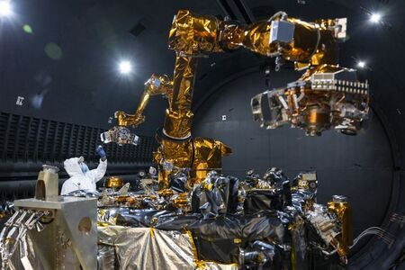
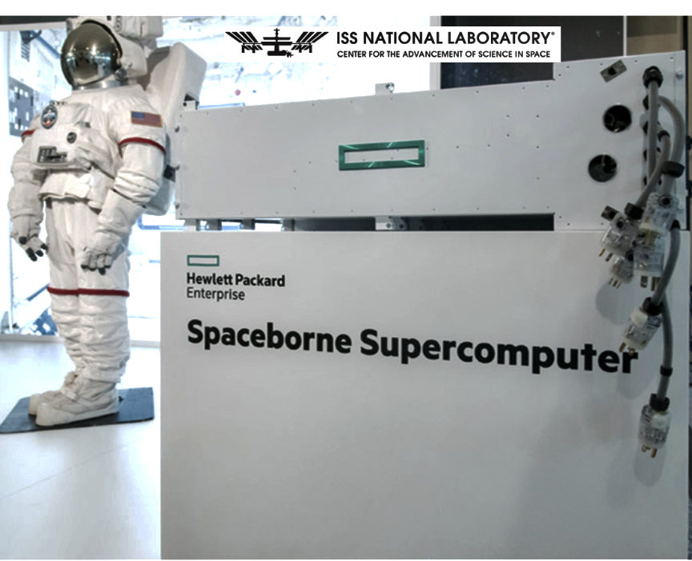

Niezawodność, serwisowanie i cykl życia sprzętu
Notatka raportu "Orbitalne centra danych". Kluczowe źródła: źródło 1, źródło 2.
W skrócie
Centrum danych na orbicie to sprzęt, do którego nikt nie przyjedzie z wkrętakiem. Na Ziemi serwerownia wymienia uszkodzony dysk czy kartę graficzną w kilka minut (tzw. hot-swap, czyli wymiana podzespołu bez wyłączania systemu), a całość sprzętu odświeża co 5-6 lat. Na orbicie tego nie ma: działająca robotyczna obsługa satelitów (Northrop Grumman MEV) dotyczy napędu i utrzymania pozycji satelitów w GEO, a nie wymiany komputerów - więc sprzęt obliczeniowy jest praktycznie "zamrożony" (frozen hardware) na cały czas misji. Dla inwestora oznacza to dwa twarde fakty: niezawodność musi być wbudowana z góry (redundancja, degradacja kontrolowana, pamięć z korekcją błędów), a modernizacja technologiczna polega nie na naprawie, lecz na deorbitacji starego i wystrzeleniu nowego modułu. Cały model ekonomiczny stoi i upada na koszcie wynoszenia: przy obecnych cenach orbitalne 1 GW to szacunkowo 42,4 mld USD wobec 14,8 mld USD na Ziemi 🔵🟠, a optymiści liczą na <200 USD/kg w połowie lat 30. jako punkt zwrotny.
Spółki powiązane
Notowane spółki produkujące podzespoły/technologie związane z tym tematem. Pełne omówienie: spółki, dla których nisza to >=33% przychodów; skrótowe: zdywersyfikowane konglomeraty. Zob. też Słownik i Spółki z ekspozycją na giełdy europejskie.
Producenci kluczowi (>=33% przychodów z niszy - omówienie pełne):
- Rocket Lab Corporation (RKLB) - Launch (Electron/Neutron) + Space Systems: bus, ogniwa SolAero, komponenty
- Redwire Corporation (RDW) - Panele ROSA, struktury rozkładane, montaż on-orbit, radiatory Q-Rad
- Voyager Technologies, Inc. (VOYG) - Stacje kosmiczne (Starlab), systemy kosmiczne i obronne
- MDA Space Ltd. (MDA) - Robotyka kosmiczna (Canadarm), busy, anteny
- Astroscale Holdings Inc. (186A) - Pure-play serwisowanie i usuwanie śmieci (ADR)
Pozostali dominujący gracze (nisza to ułamek przychodów - omówienie skrótowe):
- Northrop Grumman Corporation (NOC) - Serwis GEO (MEV/MRV), busy, radiatory, ogniwa
- Airbus SE (AIR) 🇪🇺 - PV (Sparkwing), optyka (Tesat), busy, serwis (EU)
- Lockheed Martin Corporation (LMT) - Busy satelitarne, serwisowanie, ULA (launch)
Powiązane wątki
Mapa powiązań tematycznych - jak ten wątek łączy się z resztą raportu.
- Fizyka orbitalna - deorbitacja i wymiana modułów to operacje końca życia
- Promieniowanie i elektronika - żywotność sprzętu zależy od dawki promieniowania i MTBF
- Ekonomika i TCO - cykl odświeżania vs żywotność platformy decyduje o ekonomice
- Regulacje i debris - EOL i deorbit to wymogi anty-debris
- Chłodzenie - rozkładane radiatory i brak hot-swap to wyzwania niezawodności
Brak napraw in-situ a robotyczna obsługa (Northrop Grumman MEV i następcy)
Jedyna działająca komercyjnie technologia "serwisowania" satelitów to misje typu MEV (Mission Extension Vehicle) firmy Northrop Grumman. MEV-1 i MEV-2 to pojazdy o masie odpowiednio 2330 kg i 2875 kg, z 10 kW paneli słonecznych i pełną kontrolą w sześciu stopniach swobody 🟠 (eoPortal). MEV-1 zadokował do satelity Intelsat 901 w lutym 2020, a MEV-2 do Intelsat 10-02 w kwietniu 2021 🟠 (eoPortal). Każdy pojazd ma 15-letni projektowany czas życia (design life - okres, na który zaprojektowano sprawne działanie), a pojedyncza usługa przedłużenia misji Intelsata jest planowana na 5 lat 🟠 (eoPortal). System dokowania jest kompatybilny z około 80% satelitów geostacjonarnych na orbicie 🟠 (eoPortal).
Kluczowa uwaga: MEV nie naprawia satelity ani nie wymienia w nim podzespołów - dokuje się do niego i przejmuje funkcje napędu oraz utrzymania orientacji (attitude). To "holownik kosmiczny", a nie warsztat. Następca, czyli MRV (Mission Robotic Vehicle) z modułami MEP (Mission Extension Pod), idzie dalej: SpaceLogistics (firma Northrop Grumman) zapowiedziała start MRV w 2024 na rakiecie SpaceX 🟠 (NASASpaceflight forum). MRV o masie 3000 kg ma instalować na satelitach mały moduł napędowy MEP (po ok. 400 kg), przedłużający życie satelity o masie 2000 kg o 6 lat 🟠 (NASASpaceflight forum). Sam MRV jest projektowany na 10 lat na orbicie i ma w tym czasie zainstalować nawet 30 modułów napędowych 🟠 (NASASpaceflight forum).

Rys. 41 - Mission Robotic Vehicle (Northrop Grumman) - serwisowanie na orbicie. Źródło: Northrop Grumman / SatellitePro ME, licencja: materialy prasowe - do uzytku wlasnego.
#grafika #niezawodnosc-serwisowanie-i-cykl-zycia-sprzetu #serwisowanie #MRV
Najbardziej ambitna misja serwisowania, która miała demonstrować robotyczną obsługę (w tym tankowanie i wymianę elementów) - NASA OSAM-1 - została anulowana. NASA potwierdziła plany skasowania misji serwisowania satelitów wartej 2 mld USD z powodu kosztów i opóźnień 🟠 (Satellite Today). OSAM-1 był opisywany jako robot przedłużający życie satelitów w kosmosie 🔵 (NASA GSFC), ale liczba udanych misji serwisowania in-situ w LEO dla typowych podzespołów obliczeniowych (GPU/dyski) jest NIE UJAWNIONE - proxy: MEV/MRV obsługują wyłącznie satelity w GEO (orbita geostacjonarna, ok. 36 000 km) i tylko ich napęd, nie komputery. Implikacja dla inwestora: dzisiejsza "naprawa na orbicie" to inny problem niż serwisowanie serwerowni - nie istnieje sprawdzona droga do wymiany karty obliczeniowej w locie, więc ryzyko technologiczne pozostaje wysokie.
Cykl odświeżania GPU (~3-5 lat na Ziemi) a nieserwisowalna orbita ("frozen hardware")
Na Ziemi tempo wymiany sprzętu jest dobrze udokumentowane. Najczęstszy odstęp między odświeżeniami serwerów wynosił 5 lat w 2022 wobec 3 lat w 2015 🟠 (Horizon Technology). Microsoft (CFO Amy Hood) ogłosił w 2022 wydłużenie żywotności serwerów do 6 lat, a Alphabet (Google) zaoszczędził 3 mld USD w 2023 po przejściu na cykl sześcioletni 🟠 (Horizon Technology). Z drugiej strony AWS w 2025 cofnął cykl z 6 do 5 lat i wycofał część serwerów wcześniej, co dało ok. 920 mln USD przyspieszonej amortyzacji 🟠 (Horizon Technology). 44% respondentów modernizuje serwery co 3 lata lub częściej 🟠 (Horizon Technology). Średni refresh cycle wyłącznie dla GPU jest NIE UJAWNIONE publicznie - proxy: ogólny cykl odświeżania serwerów 5-6 lat (Microsoft, Google, AWS) 🟠 (Horizon Technology).
Na orbicie sprzęt jest "zamrożony". Demonstrator Starcloud-1 (60 kg, na platformie Astro Digital Corvus-Micro) działa na niskiej orbicie (LEO) na wysokości 325 km, a jego oczekiwany czas pracy to zaledwie 11 miesięcy, po czym wykona kontrolowaną deorbitację i spłonie w atmosferze 🟠 (Gunter's Space Page). To pokazuje rdzeń problemu: nie ma jak wymienić procesora - można jedynie wystrzelić nowy egzemplarz.

Rys. 42 - HPE Spaceborne Computer-2 na ISS - heritage COTS w kosmosie. Źródło: HPE / SatNews, licencja: materialy prasowe - do uzytku wlasnego.
#grafika #niezawodnosc-serwisowanie-i-cykl-zycia-sprzetu #niezawodnosc #HPE
Dobra wiadomość dotyczy odporności na promieniowanie. Google w projekcie Suncatcher testował układy TPU (Tensor Processing Unit - akcelerator AI Google) i podaje, że oczekiwana dawka osłonięta przez 5 lat misji to 750 rad(Si) (rad to jednostka pochłoniętej dawki promieniowania) 🔵 (Google Research). Układy zaczęły wykazywać nieprawidłowości dopiero przy 2 krad(Si), czyli prawie trzy razy więcej niż dawka pięcioletnia 🔵 (Google Research), a żadnych trwałych awarii nie przypisano dawce TID (Total Ionizing Dose - skumulowana dawka jonizująca) aż do maksymalnej testowanej dawki 15 krad(Si) na pojedynczym chipie 🔵 (Google Research). Implikacja: nowoczesne układy AI mogą przetrwać na orbicie wystarczająco długo pod względem promieniowania - wąskim gardłem nie jest odporność fizyczna, lecz starzenie technologiczne i brak serwisowania.
xychart-beta
title "Odpornosc TPU na promieniowanie (krad Si)"
x-axis ["Dawka 5 lat", "Pierwsze bledy", "Max testowana"]
y-axis "krad(Si)" 0 --> 15
bar [0.75, 2, 15]
Rys. 43 - Oczekiwana osłonięta dawka w misji 5-letniej (750 rad = 0,75 krad), próg pierwszych nieprawidłowości (2 krad) i maksymalna testowana dawka bez trwałych awarii (15 krad). Dane: Google Research - Project Suncatcher.
Redundancja N+1, degradacja kontrolowana, brak hot-swap; zarządzanie awariami nodów
Skoro nie ma jak wymienić sprzętu, niezawodność trzeba zbudować programowo i przez powielanie. Konkretna architektura N+1 (czyli jeden element zapasowy ponad minimum potrzebne do pracy) dla orbitalnego DC jest NIE UJAWNIONE w produktach - prace naukowe opisują jedynie zasady ogólne. Według preprintu arXiv techniki takie jak checkpointing (okresowe zapisywanie stanu obliczeń, aby móc wznowić po awarii), selektywna replikacja i adaptacyjna redystrybucja zadań pozwalają tolerować przejściowe błędy i częściowe awarie 🔵 (arXiv 2603.18601), przy czym sama redundancja statyczna jest niewystarczająca 🔵 (arXiv 2603.18601). Drugi preprint formułuje to wprost: platformy orbitalne są trudne do serwisowania, więc niezawodność opiera się na redundancji, degradacji kontrolowanej (graceful degradation - system traci wydajność stopniowo zamiast padać całkowicie) i projektowaniu odpornym na promieniowanie, np. pamięć ECC (Error-Correcting Code - automatyczna korekcja błędów) i checkpointing 🔵 (arXiv 2603.20317); konkretna specyfikacja N+1 w produktach pozostaje NIE UJAWNIONE.
Sposób radzenia sobie z awariami w podejściu Google to modularność samej konstelacji, a nie naprawa pojedynczego układu. Firma stawia na "modułowy projekt mniejszych, połączonych satelitów" jako fundament skalowalnej infrastruktury AI w kosmosie 🔵 (Google Research). Hot-swap modułów jest tu NIE UJAWNIONE - proxy: modularność pozwala odłączyć uszkodzonego satelitę z klastra, a nie naprawić go in-situ. Implikacja dla inwestora: model awaryjności przypomina rezygnację z jednego węzła w sieci, a nie tradycyjny serwis - im większa konstelacja, tym mniej bolesna utrata pojedynczej jednostki, ale tym wyższy łączny koszt nadmiarowego sprzętu.
Starzenie technologiczne (prawo Moore'a) szybsze niż żywotność platformy - problem ekonomiczny
To centralne napięcie całej sekcji. Platforma satelitarna żyje długo: cykl życia satelitów to 5-15 lat, co oznacza, że skompromitowane (uszkodzone lub złamane) węzły mogą pozostać niewykryte przez lata 🔵 (arXiv 2603.18601). Dla porównania MEV ma 15-letni design life 🟠 (eoPortal), a misja TPU u Google jest liczona na 5 lat 🔵 (Google Research). Tymczasem na Ziemi sprzęt odświeża się co 5-6 lat 🟠 (Horizon Technology), a w segmencie GPU dla AI tempo postępu jest jeszcze szybsze (kolejne generacje co ok. 1-2 lata - branżowy fakt, bez liczby w źródle, więc NIE UJAWNIONE w danych).
Skutek: jeśli platforma żyje 5-15 lat, a technologia obliczeniowa starzeje się po 2-3 latach, to długowieczny satelita przez większość swojego życia wozi przestarzały sprzęt. Demonstrator Starcloud-1 rozwiązuje to brutalnie - żyje tylko 11 miesięcy 🟠 (Gunter's Space Page), czyli krócej niż cykl technologiczny, co czyni go "jednorazowym". Bezpośrednie porównanie starzenia GPU z żywotnością platformy orbitalnej jest NIE UJAWNIONE - proxy: 5-6 lat refresh na Ziemi wobec 5-15 lat żywotności satelity 🟠 (Horizon Technology). Implikacja: albo budujemy krótko żyjące, często wymieniane moduły (drogo w startach, ale aktualny sprzęt), albo długo żyjące platformy (taniej w startach, ale szybko przestarzałe) - i ta decyzja przesądza o rentowności.
xychart-beta
title "Cykl wymiany vs zywotnosc (lata)"
x-axis ["Refresh Ziemia", "Starcloud-1", "Satelita", "MEV design life"]
y-axis "lata" 0 --> 15
bar [5.5, 0.92, 15, 15]
Rys. 44 - Cykl odświeżania sprzętu na Ziemi (5-6 lat, środek 5,5) wobec żywotności na orbicie: Starcloud-1 (11 miesięcy = 0,92 roku), górna granica żywotności satelity (5-15 lat) i projektowy czas życia MEV (15 lat). Dane: Horizon Technology, Gunter's Space Page, arXiv 2603.18601, eoPortal.
Deorbitacja i wymiana całych modułów a upgrade
Regulacje wymuszają krótszy cykl życia. FCC przyjęło zasadę, że satelity w LEO mają deorbitować tak szybko jak to praktyczne, lecz nie później niż 5 lat po zakończeniu misji, zastępując dotychczasową wytyczną 25 lat 🟠 (Satellite Today). Starcloud-1 po 11 miesiącach wykona kontrolowaną deorbitację i spłonie w atmosferze 🟠 (Gunter's Space Page). To potwierdza model "wymieniamy cały moduł", a nie "modernizujemy in-situ".
Plany budowy dużych orbitalnych DC zakładają jednak montaż i rozbudowę na orbicie. Axiom Space deklaruje rozbudowę sieci ODC (Orbital Data Center) w nadchodzących latach, ze znaczącym zwiększeniem mocy obliczeniowej z kilowatów do megawatów na orbicie 🔵 (Axiom Space); konkretna strategia deorbitacji/wymiany modułów ODC jest NIE UJAWNIONE - proxy: retargeting modułowego węzła z ISS na swobodnie latający (free-flyer) w LEO. Europejski projekt Thales Alenia Space ASCEND zakłada, że modułowe infrastruktury kosmiczne byłyby montowane na orbicie z użyciem technologii robotycznych z programu EROSS IOD Komisji Europejskiej 🔵 (Thales Alenia Space); plan deorbitacji modułów ASCEND jest NIE UJAWNIONE. ASCEND celuje w 1 GW przed 2050 i zakłada, że Europa mogłaby mieć takie centra na orbicie już w 2036 🔵 (Thales Alenia Space). Implikacja: montaż robotyczny na orbicie i modułowość to droga do "podmiany" przestarzałych segmentów, ale na razie są to studia wykonalności, nie działająca praktyka.
Operacje autonomiczne, uptime / SLA klasy data center (99,99%?)
Centrum danych w kosmosie musi się obsługiwać samo. Łącza z Ziemią są przerywane i opóźnione, więc orbitalne DC (SBDC - Space-Based Data Center) muszą wykonywać wykrywanie, izolację i usuwanie awarii (FDIR - Fault Detection, Isolation and Recovery) oraz zarządzanie obciążeniem autonomicznie na pokładzie 🔵 (arXiv 2603.18601). Axiom zapowiada wykorzystanie AI/ML i dużych modeli językowych (LLM) do autonomicznego lub pół-autonomicznego podejmowania decyzji przez satelity 🔵 (Axiom Space), a węzły mają działać niezależnie od infrastruktury naziemnej 🔵 (Axiom Space).
Kluczowa luka: konkretne SLA/uptime dla orbitalnego DC są NIE UJAWNIONE. SLA (Service Level Agreement - umowna gwarancja dostępności usługi) klasy 99,99% to benchmark wyłącznie naziemny - dopuszcza tylko 52,56 minuty niedostępności rocznie 🔴 (Site Monitor); brak jego orbitalnego odpowiednika. Implikacja dla inwestora: dopóki żaden operator nie opublikuje realnego uptime z orbity, deklaracje "centrum danych klasy enterprise w kosmosie" trzeba traktować jako obietnice, a nie udowodniony parametr.
Kontrowersje
Czy brak serwisowania zabija ekonomikę, czy "tanie wynoszenie = wymieniamy moduły"?
Strona sceptyczna: brak serwisowania w połączeniu z wysokim kosztem startu psuje rachunek. Według analizy TechCrunch orbitalne centrum 1 GW może kosztować 42,4 mld USD 🟠 (TechCrunch), a inne zestawienie podaje "3x lukę kosztową": 42,4 mld USD na orbicie wobec 14,8 mld USD na Ziemi dla 1 GW 🔴 (AskSterling). Skoro modułów nie da się naprawić, każda awaria oznacza utratę całej (kosztownej) jednostki.
xychart-beta
title "Koszt 1 GW: orbita vs Ziemia (mld USD)"
x-axis ["Orbita", "Ziemia"]
y-axis "mld USD" 0 --> 45
bar [42.4, 14.8]
Rys. 45 - Szacowany koszt centrum danych 1 GW na orbicie wobec naziemnego (luka około 3x). Dane: TechCrunch, AskSterling.
Strona optymistyczna: gdy starty stanieją, wymiana całych modułów staje się opłacalna, a darmowa energia słoneczna nadrabia resztę. Google szacuje, że ceny mogą spaść poniżej 200 USD/kg w połowie lat 30., a wtedy koszt wyniesienia i eksploatacji orbitalnego DC może być z grubsza porównywalny z kosztami energii równoważnego DC naziemnego 🔵 (Google Research). Starcloud podaje własny próg: Starcloud-3 będzie konkurencyjny kosztowo z DC naziemnymi dopiero, gdy komercyjne koszty startu spadną do ok. 500 USD/kg 🔴 (Kingy AI). Po stronie energii: Słońce emituje więcej mocy niż 100 bilionów razy całkowita produkcja energii elektrycznej ludzkości 🔵 (Google Research), a panel słoneczny na orbicie może być do 8 razy wydajniejszy niż na Ziemi 🔵 (Google Research); jedno zestawienie podaje nawet 22x tańszą energię na orbicie wobec sieci naziemnej 🔴 (AskSterling). Różnice nie uśredniam: rozstrzał założeń o koszcie startu (obecnie wysoki wobec docelowych <200-500 USD/kg) jest tak duży, że obie strony mogą mieć rację w różnych horyzontach czasowych.
Realny tech-refresh cycle a żywotność platformy; brak danych o uptime DC-class na orbicie
Strona "platforma żyje za długo": satelity żyją 5-15 lat 🔵 (arXiv 2603.18601), podczas gdy sprzęt na Ziemi odświeża się co 5-6 lat 🟠 (Horizon Technology) - długowieczny satelita wozi więc przestarzały sprzęt. Strona "krótki cykl modułu": demonstrator Starcloud-1 żyje 11 miesięcy 🟠 (Gunter's Space Page), czyli krócej niż cykl technologiczny, więc po prostu wymienia się cały moduł nowym startem zamiast go modernizować. Co do uptime: brak publicznych SLA/uptime dla orbitalnych DC jest NIE UJAWNIONE - proxy to redundancja/modułowość oraz autonomia FDIR 🔵 (Axiom Space). Brak potwierdzonych danych o uptime klasy DC na orbicie pozostaje realną luką informacyjną - nie da się tej rozbieżności rozstrzygnąć, bo żadna strona nie dysponuje opublikowanym pomiarem z orbity.
Słowniczek pojęć
- Hot-swap - wymiana podzespołu (np. dysku, karty) bez wyłączania całego systemu, niemożliwa na orbicie.
- Frozen hardware (sprzęt zamrożony) - sprzęt obliczeniowy, którego nie da się wymienić ani zmodernizować przez cały czas trwania misji.
- MEV (Mission Extension Vehicle) - pojazd Northrop Grumman, który dokuje do satelity i przejmuje jego napęd oraz utrzymanie pozycji, przedłużając misję.
- MRV (Mission Robotic Vehicle) / MEP (Mission Extension Pod) - następca MEV: pojazd instalujący na satelitach małe moduły napędowe (MEP) zamiast jednorazowego dokowania.
- OSAM-1 - anulowana misja NASA, która miała demonstrować robotyczne serwisowanie satelitów, w tym tankowanie i wymianę elementów.
- Refresh cycle (cykl odświeżania) - odstęp czasu, po którym centrum danych wymienia sprzęt na nowszy (na Ziemi zwykle 3-6 lat).
- Design life (projektowy czas życia) - okres, na który zaprojektowano sprawne działanie urządzenia lub satelity.
- Redundancja N+1 - architektura niezawodności z jednym elementem zapasowym ponad minimum potrzebne do pracy.
- Degradacja kontrolowana (graceful degradation) - tryb, w którym system traci wydajność stopniowo zamiast padać całkowicie.
- Checkpointing - okresowe zapisywanie stanu obliczeń, aby móc wznowić pracę po awarii.
- Pamięć ECC (Error-Correcting Code) - pamięć z automatyczną korekcją błędów wywołanych m.in. promieniowaniem.
- TID (Total Ionizing Dose) - skumulowana dawka promieniowania jonizującego pochłonięta przez układ, mierzona w rad(Si).
- FDIR (Fault Detection, Isolation and Recovery) - autonomiczne wykrywanie, izolacja i usuwanie awarii na pokładzie satelity.
- Uptime / SLA (Service Level Agreement) - umowna gwarancja dostępności usługi; benchmark 99,99% dopuszcza tylko 52,56 minuty niedostępności rocznie.
- Deorbitacja - kontrolowane sprowadzenie satelity z orbity, zwykle zakończone spłonięciem w atmosferze.
- LEO / GEO - niska orbita okołoziemska (LEO, setki km) oraz orbita geostacjonarna (GEO, ok. 36 000 km).
Linkują tutaj
15 powiązanych notatek
- Mapa raportu Orbitalne / kosmiczne centra danych
- Sekcja Fizyka orbitalna, orbity i operacje
- Sekcja Chłodzenie i radiacyjne odprowadzanie ciepła
- Sekcja Promieniowanie i elektronika rad-hard vs COTS
- Sekcja Ekonomika i koszty całkowite (TCO)
- Sekcja Regulacje, prawo kosmiczne, debris i ITU
- Sekcja Bezpieczeństwo, geopolityka i realizm 10-letni
- Spółka Airbus (AIR)
- Spółka Astroscale (186A)
- Spółka Lockheed Martin (LMT)
- Spółka MDA Space (MDA)
- Spółka Northrop Grumman (NOC)
- Spółka Redwire (RDW)
- Spółka Rocket Lab (RKLB)
- Spółka Voyager Technologies (VOYG)